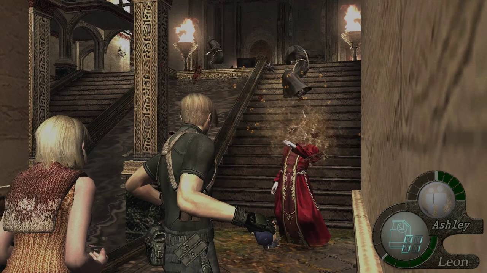
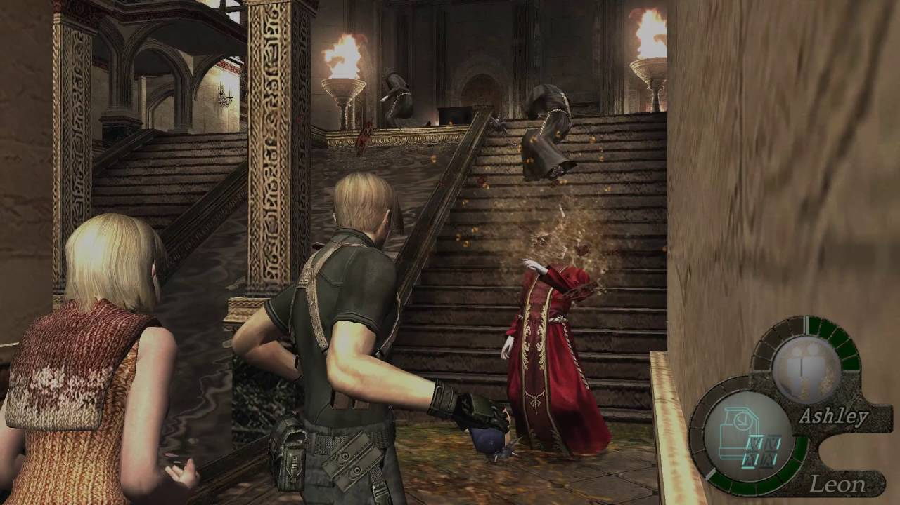
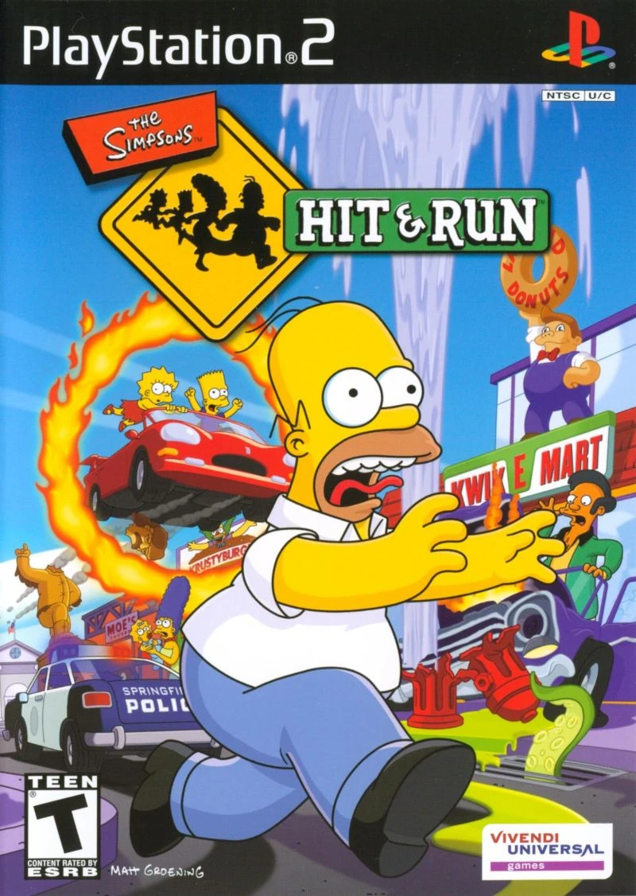
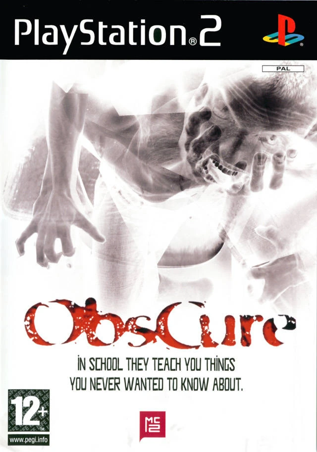

Call Of Duty (2003)

Age of Empires II (1999)

Life Is Strange (2015)

Resident Evil 4 (2005)

Croc: Legend of the Gobbos (1997)

Devil May Cry (2001)

The Curse Of Monkey Island (1997)

Silent Hill 2 (2001)

Commandos: Behind Enemy Lines (1998)

Grim Fandango (1998)

The Simpsons: Hit & Run (2003)
Obscure (2004)
1
→